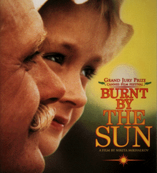

Film After The Soviets (Part 1)
1991 is seen as an important year in world history, albeit mainly in political, ideological and economic terms. The medium of cinema, however, is interesting to analyse with regards to post-Soviet culture as it closely mirrors cultural trends and tastes witnessed within a society. The post-Soviet cinema industry, like any, plays a vital historical role in how we perceive society. Cinema shows modern interpretations of events that may have happened a long time previously and also events that may not have been discussed at all. In this two-part feature, it will be possible to see how post-Soviet cinema has helped to formulate new ideas of Russian history, reinforced existing ones, and how these examples are 'highlights' of new Russian cinema lending itself to 'Russian-ness', i.e. to what extent the ideas and themes in post-Soviet Russian film shape modern Russian living (or vice versa).
The film industry can often indicate and reflect the performance of an economy on a macroeconomic scale and therefore, to a certain extent, the functioning of society. The post-Soviet film industry is an especially good example. Following the collapse of the Soviet Union, the number of released Russian films slumped as a result of the chaos existing within the fabric of society, and 85% of these films were funded by American companies. As Russia began to function as a stronger, more economic nation (albeit in the hands of organised crime) towards the mid-1990s, film production saw a dramatic increase. It could be argued that this was a result of film production being an efficient, but generally beneficial method of money laundering. The number of feature-lengths slumped again in 1997-8 (21 and 53 films respectively), when Russia passed through another economic crisis, this time the default of the rouble. While the avant-garde (particularly in St. Petersburg) may have flourished at this point, with short, low-budget, underground cinema clubs, the mainstream industry evidently suffered, due to a lack of investment. Since 1998, the number of Russian films has increased steadily, mirroring the economic stability seen in the Russian economy. This is not to say that the post-Soviet Russian film is dependent entirely on the performance of the Russian economy.

Indeed, many films in the 1990's were co-funded by foreign investors. An important example of this is Nikita Mikhalkov's 'Burnt By The Sun' (Utomlyonnye solntsem, 1994), which was co-produced and funded by the French organisations Camera One and Canal+ .'Burnt By The Sun' was and is still seen as a key example of the potential of post-Soviet cinema. Stalinism was not an issue directly addressed in Soviet cinema until perestroika, the first notable example being Tengiz Abuladze's 'Repentance' (Monanieba, 1986). In the post-Soviet discussion of Stalinism, we see issues of a former world power (i.e. Stalinism in the Soviet Union) being dealt with by a new world power (Russia). Mikhalkov uses a variety of devices to promote his ideas. Throughout 'Burnt By The Sun', an emphasis is placed on folk-based tradition, skaski (storytelling) and song. We see how these old traditions, and even the comparably young traditions of the Soviet Union are dismantled by the Stalinist Terror. As Mikhalkov (here Red Army Commander Kotov) himself is taken away towards the end of the film, we see the disintegration of belief systems on a number of levels. Firstly, we see the effect on the community in which he lives. Kotov is seen as a war hero, very much a pillar of the community, so his neighbours feel disoriented when they hear that he could be an enemy of the state. Secondly, there is a disintegration of the belief system within the Stalinist regime itself, as Mitia, a NKVD officer, who is responsible for Mikhalkov's purge commits suicide at the end of the film. This sequence of events underlines an element of humanism that runs on many levels throughout the film, from folk traditions through to totalitarian power discourses in that regardless of someone's social construct, one remains an element of base morality.
It is easy to criticise Mikhalkov of exploiting an open market; since perestroika there had been a massive loosening of censorship in Russia, and the breakup of the Soviet Union would have been an opportune time to create a film that discusses (and of course, condemns) the Stalinist Terror. Indeed, 'Burnt By The Sun' was intended as commercial cinema, having been given a budget of $3.6m. Mikhalkov's questioning of Stalinism also contains an element of sympathy, reached through the humanistic principles of the film, which may coincide with Mikhalkov's supported view of Russia existing as a totalitarian Eurasian center, where other Asian states play subordinate to the demands of a Central Asian Russia. Due to an international distribution deal (from Pathe International) resulting from a Russo-French investment partnership (as well as the open borders of Russia), it was clear that 'Burnt By The Sun' was going to receive more exposure than 'Repentance', but is arguable as to whether one film plays a more important role than the other. What is important, however, is that Mikhalkov's effort set the tempo for the new, fresh and challenging Russian cinema.
Another interesting reference to the Stalinist period in post-Soviet Russian cinema can be seen in Stanislav Govorukhin's 'Not By Bread Alone' (Ne hlebom edinym, 2005). This is a modern film adaptation of Dudintsev's 1956 novel by the same name, itself a key player in the early literature of the Thaw era. Here, Govorukhin uses the book accurately as a framework, whilst adapting the text to suit a modern, cinema-going audience. Whilst starkly evoking post-war Soviet society with intricate and realistic set design, Govorukhin also highlights the important link between literature and cinema, a very Russian concept. Nowadays, the 'film adaptation' can merely be interpreted as a cash-in policy, but the writings of Eisenstein in the 1920s pointed out the importance of certain writers (namely Dovzhenko and Babel') in the formation of the Soviet cinema. It is therefore fitting to see that directors today in Russia are looking to literary classics for inspiration and genuine messages. Using the widely-recognised Viktor Sukhorukov (as bureaucratic sycophant Drozdov) and others in the cast may be savvy, and some may resent the Soviet Union in the 1950s being represented as a costume drama, but this version of 'Not By Bread Alone' addresses several important points; Stalinism itself and dealing with the Stalinist legacy, the role between literature and cinema, and the addressing of Russia's literary legacy.
Switching back to the small screen, taking into account the widespread success of Vladimir Bortko's TV serial 'Master and Margarita' (2005), an adaptation of Bulgakov's classic, it is clear that Russian people are not only proud of their literary identity, but enjoy it too, much like their adaptation to their new post-Soviet identity.
. . .
Click here for Part 2 of Richard's feature on post-Soviet cinema.